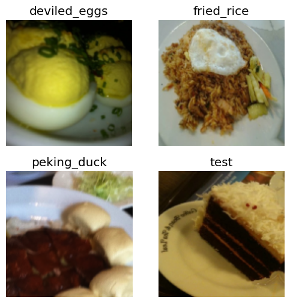

Call library, download data, create folder blah blah..
#hide
!pip install -Uqq fastbook
!pip install timm
import fastbook
fastbook.setup_book()
import timm
#hide
from fastbook import *
from fastai.vision.widgets import *
from fastai.vision.all import *
path = Path('/content')
untar_data(URLs.FOOD, data=path)
# actual path to train image folder
train_path = Path('/content/food-101/images')
test_path = Path('/content/food-101/test')
# Create Test folder
import os
import random
import shutil
def move_images_to_test(source_folder, test_folder, percentage=0.1):
# Create the test folder if it doesn't exist
os.makedirs(test_folder, exist_ok=True)
# Iterate through each subfolder in the source folder
for subfolder in os.listdir(source_folder):
subfolder_path = os.path.join(source_folder, subfolder)
# Check if it's a directory
if os.path.isdir(subfolder_path):
# Get a list of all image files in the subfolder
image_files = [f for f in os.listdir(subfolder_path) if f.endswith('.jpg')]
# Calculate the number of images to move
num_images_to_move = int(len(image_files) * percentage)
# Randomly select images to move
images_to_move = random.sample(image_files, num_images_to_move)
# Move selected images to the test folder
for image in images_to_move:
source_path = os.path.join(subfolder_path, image)
dest_path = os.path.join(test_folder, image)
shutil.move(source_path, dest_path)
if __name__ == "__main__":
move_images_to_test(train_path, test_path, percentage=0.15)Requirement already satisfied: timm in /opt/conda/lib/python3.10/site-packages (0.9.16)
Requirement already satisfied: torch in /opt/conda/lib/python3.10/site-packages (from timm) (2.1.2)
Requirement already satisfied: torchvision in /opt/conda/lib/python3.10/site-packages (from timm) (0.16.2)
Requirement already satisfied: pyyaml in /opt/conda/lib/python3.10/site-packages (from timm) (6.0.1)
Requirement already satisfied: huggingface_hub in /opt/conda/lib/python3.10/site-packages (from timm) (0.20.3)
Requirement already satisfied: safetensors in /opt/conda/lib/python3.10/site-packages (from timm) (0.4.2)
Requirement already satisfied: filelock in /opt/conda/lib/python3.10/site-packages (from huggingface_hub->timm) (3.13.1)
Requirement already satisfied: fsspec>=2023.5.0 in /opt/conda/lib/python3.10/site-packages (from huggingface_hub->timm) (2024.2.0)
Requirement already satisfied: requests in /opt/conda/lib/python3.10/site-packages (from huggingface_hub->timm) (2.31.0)
Requirement already satisfied: tqdm>=4.42.1 in /opt/conda/lib/python3.10/site-packages (from huggingface_hub->timm) (4.66.1)
Requirement already satisfied: typing-extensions>=3.7.4.3 in /opt/conda/lib/python3.10/site-packages (from huggingface_hub->timm) (4.9.0)
Requirement already satisfied: packaging>=20.9 in /opt/conda/lib/python3.10/site-packages (from huggingface_hub->timm) (21.3)
Requirement already satisfied: sympy in /opt/conda/lib/python3.10/site-packages (from torch->timm) (1.12)
Requirement already satisfied: networkx in /opt/conda/lib/python3.10/site-packages (from torch->timm) (3.2.1)
Requirement already satisfied: jinja2 in /opt/conda/lib/python3.10/site-packages (from torch->timm) (3.1.2)
Requirement already satisfied: numpy in /opt/conda/lib/python3.10/site-packages (from torchvision->timm) (1.26.4)
Requirement already satisfied: pillow!=8.3.*,>=5.3.0 in /opt/conda/lib/python3.10/site-packages (from torchvision->timm) (9.5.0)
Requirement already satisfied: pyparsing!=3.0.5,>=2.0.2 in /opt/conda/lib/python3.10/site-packages (from packaging>=20.9->huggingface_hub->timm) (3.1.1)
Requirement already satisfied: MarkupSafe>=2.0 in /opt/conda/lib/python3.10/site-packages (from jinja2->torch->timm) (2.1.3)
Requirement already satisfied: charset-normalizer<4,>=2 in /opt/conda/lib/python3.10/site-packages (from requests->huggingface_hub->timm) (3.3.2)
Requirement already satisfied: idna<4,>=2.5 in /opt/conda/lib/python3.10/site-packages (from requests->huggingface_hub->timm) (3.6)
Requirement already satisfied: urllib3<3,>=1.21.1 in /opt/conda/lib/python3.10/site-packages (from requests->huggingface_hub->timm) (1.26.18)
Requirement already satisfied: certifi>=2017.4.17 in /opt/conda/lib/python3.10/site-packages (from requests->huggingface_hub->timm) (2024.2.2)
Requirement already satisfied: mpmath>=0.19 in /opt/conda/lib/python3.10/site-packages (from sympy->torch->timm) (1.3.0)100.00% [5686607872/5686607260 02:04<00:00]
dls = ImageDataLoaders.from_folder(path, valid_pct=0.2, seed=42,
item_tfms=Resize(256, method='squish'),
batch_tfms=aug_transforms(size=128, min_scale=0.75))
dls.show_batch(max_n=4)
Under-sampling
Previously, we had very big data to be trained on, which is why it took so long to train our model. Learning from that, we can undersample our training dataset so that we can get a picture of which model works best. Generally, if a model is performing well proportion of dataset, it will likely perform well on the whole dataset.
There are two ways of doing this :
We can take 5-10% of all types of food & then train our model
We can target 1 food type and train our model on it.
Problem with case 1 is that we would have so little that from every type of food that our model might not be able to understand it well. In case 2, we can significantly reduce the training time and computational resources required.
subfolders = [f.name for f in os.scandir(train_path) if f.is_dir()]
subfolder_count = len(subfolders)
print(subfolders)['fish_and_chips', 'caprese_salad', 'strawberry_shortcake', 'pork_chop', 'edamame', 'macaroni_and_cheese', 'gnocchi', 'lobster_roll_sandwich', 'takoyaki', 'baklava', 'sushi', 'beef_tartare', 'miso_soup', 'steak', 'hot_dog', 'grilled_cheese_sandwich', 'greek_salad', 'crab_cakes', 'falafel', 'beet_salad', 'apple_pie', 'onion_rings', 'chocolate_mousse', 'risotto', 'chicken_wings', 'french_fries', 'pancakes', 'paella', 'chicken_quesadilla', 'gyoza', 'bread_pudding', 'beignets', 'carrot_cake', 'waffles', 'ceviche', 'huevos_rancheros', 'ravioli', 'sashimi', 'bibimbap', 'creme_brulee', 'spaghetti_bolognese', 'cheese_plate', 'oysters', 'filet_mignon', 'baby_back_ribs', 'fried_rice', 'ice_cream', 'tacos', 'cheesecake', 'foie_gras', 'shrimp_and_grits', 'macarons', 'poutine', 'french_onion_soup', 'deviled_eggs', 'grilled_salmon', 'eggs_benedict', 'croque_madame', 'seaweed_salad', 'churros', 'hummus', 'bruschetta', 'club_sandwich', 'ramen', 'clam_chowder', 'cup_cakes', 'hot_and_sour_soup', 'garlic_bread', 'breakfast_burrito', 'guacamole', 'lobster_bisque', 'spring_rolls', 'samosa', 'red_velvet_cake', 'pulled_pork_sandwich', 'escargots', 'chocolate_cake', 'spaghetti_carbonara', 'caesar_salad', 'hamburger', 'tuna_tartare', 'donuts', 'fried_calamari', 'mussels', 'omelette', 'panna_cotta', 'pad_thai', 'beef_carpaccio', 'pizza', 'nachos', 'chicken_curry', 'pho', 'tiramisu', 'frozen_yogurt', 'peking_duck', 'prime_rib', 'cannoli', 'dumplings', 'french_toast', 'lasagna', 'scallops']# let's randomly take baby_back_ribs folder for training
trn_path = train_path/'baby_back_ribs'
tst_files = get_image_files(test_path).sorted()GPU Problem
In the previous file, we encountered a problem regarding GPU, where we run out of memory & have to wait to till our memory was cleared by Kaggle(on Saturday). We can use Gradient accumulation or Half-Precision floating point to save from future GPU constraints. Regarding Half-Precision floating point, we tested it in our first notebook of this series and observed minimal change in performance.
Gradient Accumulation
Working of Gradient Accumulation :
Forward pass: Input data is fed through the model to compute predictions.
Backward pass: Gradients are computed by back-propagating the error through the network.
Gradients are accumulated over multiple mini-batches.
Model parameters are updated after a certain number of mini-batches.
By accumulating gradients over multiple batches,it allows to simulate the effects of a larger batch size without exceeding the available memory.
However, there is a catch that it can have Impact on Training Time. While increasing accumulation can save GPU memory, it may also slow down the training process. The model parameters are updated less frequently, potentially prolonging the convergence time.
fine_tune() vs fit_one_cycle()
fine_tune() It uses transfer learning, where it take a pre-trained model (on ImageNet) & fine-tune it on a specific dataset. Idea is to leverage features learned by the pre-trained model & adapt them to new dataset.
It uses ‘discriminative learning rates’, where earlier layers are trained with lower learning rates (taking more time but understand data better) to avoid disrupting the general features they have learned. In contrast, later layers are trained with higher learning rates to adapt more quickly to the new tasks.
fit_one_cycle() It used for training a model from scratch or for further fine tuning already fine tuned model.
It starts with low learning rate & gradually increases it over the courses of first half of learning rate.
In second half it decreases.
This cyclical pattern of learning rates is repeated for no of epochs specified.
fine_tune() is primarily used for transfer learning, leveraging pre-trained models & adapting them to new data. While fit_one_cycle() is used for training models from scratch or further fine-tuning them using a cyclical learning rate schedule.
fine_tune() is faster since it doesn’t do an initial fine-tuning of the head.
def train(arch, size, item=Resize(480, method='squish'), accum=1, finetune=True, epochs=5):
dls = ImageDataLoaders.from_folder(trn_path, valid_pct=0.2, item_tfms=item,
batch_tfms=aug_transforms(size=size, min_scale=0.75), bs=64//accum)
cbs = GradientAccumulation(64) if accum else []
learn = vision_learner(dls, arch, metrics=error_rate, cbs=cbs).to_fp16()
if finetune:
learn.fine_tune(epochs, 0.01)
return learn.tta(dl=dls.test_dl(tst_files))
else:
learn.unfreeze()
learn.fit_one_cycle(epochs, 0.01)
Check the available GPU memory on Kaggle.
import torch
def check_gpu_memory():
if torch.cuda.is_available():
device = torch.device("cuda")
total_memory = torch.cuda.get_device_properties(device).total_memory
reserved_memory = torch.cuda.memory_reserved(device)
allocated_memory = torch.cuda.memory_allocated(device)
free_memory = total_memory - reserved_memory - allocated_memory
print(f"Total GPU memory: {total_memory / (1024 ** 3):.2f} GB")
print(f"Reserved GPU memory: {reserved_memory / (1024 ** 3):.2f} GB")
print(f"Allocated GPU memory: {allocated_memory / (1024 ** 3):.2f} GB")
print(f"Free GPU memory: {free_memory / (1024 ** 3):.2f} GB")
else:
print("GPU not available.")
# Call the function to check GPU memory
check_gpu_memory()Total GPU memory: 14.75 GB
Reserved GPU memory: 0.00 GB
Allocated GPU memory: 0.00 GB
Free GPU memory: 14.75 GBImpact of Gradient Accumulation
train('convnext_small_in22k', 128, epochs=1, accum=1, finetune=False)/opt/conda/lib/python3.10/site-packages/timm/models/_factory.py:117: UserWarning: Mapping deprecated model name convnext_small_in22k to current convnext_small.fb_in22k.
model = create_fn(
model.safetensors: 0%| | 0.00/265M [00:00<?, ?B/s]| epoch | train_loss | valid_loss | error_rate | time |
|---|---|---|---|---|
| 0 | 0.000000 | 0.000000 | 0.000000 | 00:08 |
**It took 0:08 In GPU T4*2 and 0:22 in GPU P100**
Memory Consumption and Clearning It after usage
import gc
def report_gpu():
print(torch.cuda.list_gpu_processes())
gc.collect()
torch.cuda.empty_cache()report_gpu()GPU:0
process 2200 uses 3250.000 MB GPU memorySo with accum=1 the GPU used around 3GB RAM. Let’s try accum=2:
train('convnext_small_in22k', 128, epochs=1, accum=2, finetune=False)
print("Report GPU:")
print(report_gpu())
print("\nGPU_Memory:")
print(check_gpu_memory())| epoch | train_loss | valid_loss | error_rate | time |
|---|---|---|---|---|
| 0 | 0.000000 | 0.000000 | 0.000000 | 00:06 |
Report GPU:
GPU:0
process 2200 uses 2200.000 MB GPU memory
None
GPU_Memory:
Total GPU memory: 14.75 GB
Reserved GPU memory: 0.14 GB
Allocated GPU memory: 0.02 GB
Free GPU memory: 14.59 GB
NoneAs we can see that, the RAM usage has now gone down to 2GB. It’s not halved since there’s other overhead involved (for larger models this overhead is likely to be relatively lower).
Let’s try 4:
train('convnext_small_in22k', 128, epochs=1, accum=4, finetune=False)
print("Report GPU:")
print(report_gpu())
print("\nGPU_Memory:")
print(check_gpu_memory())| epoch | train_loss | valid_loss | error_rate | time |
|---|---|---|---|---|
| 0 | 0.000000 | 0.000000 | 0.000000 | 00:08 |
Report GPU:
GPU:0
process 2200 uses 1664.000 MB GPU memory
None
GPU_Memory:
Total GPU memory: 14.75 GB
Reserved GPU memory: 0.14 GB
Allocated GPU memory: 0.02 GB
Free GPU memory: 14.59 GB
NoneWe are down to half of original version
Memory Usage of Every Model
Let’s test this approach on all models that we want to evaluate and determine the optimal value for gradient accumulation. Kaggle provides a 16 GB GPU, and our goal is to fit all of our architectures within this constraint.
convnext_large_in22k make GPU Crash always, so let’s tone it down to convnext_base_in22k
train('convnext_base_in22k', 256, epochs=2, accum=1, finetune=False)
print("Report GPU:")
print(report_gpu())
print("\nGPU_Memory:")
print(check_gpu_memory())/opt/conda/lib/python3.10/site-packages/timm/models/_factory.py:117: UserWarning: Mapping deprecated model name convnext_base_in22k to current convnext_base.fb_in22k.
model = create_fn(
model.safetensors: 0%| | 0.00/440M [00:00<?, ?B/s]| epoch | train_loss | valid_loss | error_rate | time |
|---|---|---|---|---|
| 0 | 0.000000 | 0.000000 | 0.000000 | 00:12 |
| 1 | 0.000000 | 0.000000 | 0.000000 | 00:12 |
Report GPU:
GPU:0
process 2200 uses 12246.000 MB GPU memory
None
GPU_Memory:
Total GPU memory: 14.75 GB
Reserved GPU memory: 0.14 GB
Allocated GPU memory: 0.02 GB
Free GPU memory: 14.59 GB
Nonetrain('convnext_base_in22k', 256, epochs=2, accum=2, finetune=False)
print("Report GPU:")
print(report_gpu())
print("\nGPU_Memory:")
print(check_gpu_memory())| epoch | train_loss | valid_loss | error_rate | time |
|---|---|---|---|---|
| 0 | 0.000000 | 0.000000 | 0.000000 | 00:12 |
| 1 | 0.000000 | 0.000000 | 0.000000 | 00:12 |
Report GPU:
GPU:0
process 2200 uses 6988.000 MB GPU memory
None
GPU_Memory:
Total GPU memory: 14.75 GB
Reserved GPU memory: 0.14 GB
Allocated GPU memory: 0.02 GB
Free GPU memory: 14.59 GB
Nonetrain('convnext_base_in22k', 256, epochs=2, accum=4, finetune=False)
print("Report GPU:")
print(report_gpu())
print("\nGPU_Memory:")
print(check_gpu_memory())| epoch | train_loss | valid_loss | error_rate | time |
|---|---|---|---|---|
| 0 | 0.000000 | 0.000000 | 0.000000 | 00:13 |
| 1 | 0.000000 | 0.000000 | 0.000000 | 00:12 |
Report GPU:
GPU:0
process 2200 uses 4360.000 MB GPU memory
None
GPU_Memory:
Total GPU memory: 14.75 GB
Reserved GPU memory: 0.14 GB
Allocated GPU memory: 0.02 GB
Free GPU memory: 14.59 GB
NoneWith accum = 4 there 1/3 of the memory consumption than original and also there not very high change in time taken
vit_base which is a transformer
train('vit_base_patch16_224', 224, epochs=2, accum=4, finetune=False)
print("Report GPU:")
print(report_gpu())
print("\nGPU_Memory:")
print(check_gpu_memory())model.safetensors: 0%| | 0.00/346M [00:00<?, ?B/s]| epoch | train_loss | valid_loss | error_rate | time |
|---|---|---|---|---|
| 0 | 0.000000 | 0.000000 | 0.000000 | 00:09 |
| 1 | 0.000000 | 0.000000 | 0.000000 | 00:08 |
Report GPU:
GPU:0
process 2200 uses 2998.000 MB GPU memory
None
GPU_Memory:
Total GPU memory: 14.75 GB
Reserved GPU memory: 0.14 GB
Allocated GPU memory: 0.02 GB
Free GPU memory: 14.59 GB
NoneScaling It Up!, Training on full data
Let’s create dictonary of all the required models & the preprocessing techinque like crop,squish etc.
trn_path = train_path
models = {
'convnext_base_in22k': {
(Resize(480), (224)),
}, 'vit_base_patch16_224': {
(Resize(480, method='squish'), 224),
(Resize(480), 224),
}
}models.items()dict_items([('convnext_base_in22k', {(Resize -- {'size': (480, 480), 'method': 'crop', 'pad_mode': 'reflection', 'resamples': (<Resampling.BILINEAR: 2>, <Resampling.NEAREST: 0>), 'p': 1.0}:
encodes: (Image,object) -> encodes
(TensorBBox,object) -> encodes
(TensorPoint,object) -> encodes
decodes: , 224)}), ('vit_base_patch16_224', {(Resize -- {'size': (480, 480), 'method': 'squish', 'pad_mode': 'reflection', 'resamples': (<Resampling.BILINEAR: 2>, <Resampling.NEAREST: 0>), 'p': 1.0}:
encodes: (Image,object) -> encodes
(TensorBBox,object) -> encodes
(TensorPoint,object) -> encodes
decodes: , 224), (Resize -- {'size': (480, 480), 'method': 'crop', 'pad_mode': 'reflection', 'resamples': (<Resampling.BILINEAR: 2>, <Resampling.NEAREST: 0>), 'p': 1.0}:
encodes: (Image,object) -> encodes
(TensorBBox,object) -> encodes
(TensorPoint,object) -> encodes
decodes: , 224)})])Append each set of TTA predictions on the test set into a list called tta_res
tta_res = []
for arch,details in models.items():
for item,size in details:
print('---',arch)
print(size)
print(item.name)
tta_res.append(train(arch, size, item=item, accum=4)) #, epochs=1))
gc.collect()
torch.cuda.empty_cache()
--- convnext_base_in22k
224
Resize -- {'size': (480, 480), 'method': 'crop', 'pad_mode': 'reflection', 'resamples': (<Resampling.BILINEAR: 2>, <Resampling.NEAREST: 0>), 'p': 1.0}| epoch | train_loss | valid_loss | error_rate | time |
|---|---|---|---|---|
| 0 | 0.921503 | 0.649621 | 0.179557 | 12:54 |
| epoch | train_loss | valid_loss | error_rate | time |
|---|---|---|---|---|
| 0 | 0.623931 | 0.491215 | 0.132964 | 16:42 |
| 1 | 0.590722 | 0.472942 | 0.128422 | 16:56 |
| 2 | 0.414496 | 0.423165 | 0.111881 | 16:38 |
| 3 | 0.234155 | 0.403548 | 0.100291 | 17:14 |
| 4 | 0.168659 | 0.408064 | 0.099418 | 16:41 |
--- vit_base_patch16_224
224
Resize -- {'size': (480, 480), 'method': 'squish', 'pad_mode': 'reflection', 'resamples': (<Resampling.BILINEAR: 2>, <Resampling.NEAREST: 0>), 'p': 1.0}| epoch | train_loss | valid_loss | error_rate | time |
|---|---|---|---|---|
| 0 | 1.048016 | 0.767763 | 0.210891 | 10:24 |
| epoch | train_loss | valid_loss | error_rate | time |
|---|---|---|---|---|
| 0 | 0.901554 | 0.667587 | 0.179441 | 13:21 |
| 1 | 0.723949 | 0.652103 | 0.176296 | 13:18 |
| 2 | 0.525216 | 0.550479 | 0.146302 | 13:19 |
| 3 | 0.276363 | 0.497780 | 0.126616 | 13:16 |
| 4 | 0.183772 | 0.490051 | 0.119802 | 13:15 |
--- vit_base_patch16_224
224
Resize -- {'size': (480, 480), 'method': 'crop', 'pad_mode': 'reflection', 'resamples': (<Resampling.BILINEAR: 2>, <Resampling.NEAREST: 0>), 'p': 1.0}| epoch | train_loss | valid_loss | error_rate | time |
|---|---|---|---|---|
| 0 | 1.054235 | 0.758079 | 0.205708 | 10:19 |
| epoch | train_loss | valid_loss | error_rate | time |
|---|---|---|---|---|
| 0 | 0.881566 | 0.701312 | 0.193710 | 13:15 |
| 1 | 0.741848 | 0.650074 | 0.174490 | 13:15 |
| 2 | 0.547625 | 0.550333 | 0.144904 | 13:15 |
| 3 | 0.274780 | 0.499551 | 0.125859 | 13:13 |
| 4 | 0.173512 | 0.485806 | 0.118987 | 13:15 |
Save the Model
save_pickle('/kaggle/working/Lecture6_Part3_tta_res.pkl', tta_res)Ensemble
Learner.tta returns predictions and targets for each rows. We just want the predictions
tta_prs = first(zip(*tta_res))tta_prs(tensor([[1.4376e-09, 6.0367e-10, 8.9613e-10, ..., 5.5386e-09, 8.7931e-08, 4.2121e-10],
[4.7340e-05, 7.8465e-06, 1.3157e-05, ..., 3.5937e-05, 6.6248e-06, 2.0246e-06],
[2.3749e-05, 2.8122e-07, 8.3784e-08, ..., 6.6318e-06, 5.9989e-08, 9.9459e-07],
...,
[1.9584e-06, 1.3206e-07, 3.0607e-06, ..., 1.4922e-07, 5.0935e-09, 8.6562e-08],
[4.8399e-03, 1.2087e-04, 4.5856e-04, ..., 5.0185e-06, 9.4111e-05, 1.8684e-05],
[5.0047e-06, 4.3755e-05, 1.8506e-06, ..., 6.1585e-06, 5.6130e-07, 1.9855e-06]]),
tensor([[3.4493e-08, 5.3500e-09, 1.6126e-07, ..., 3.8252e-08, 1.5104e-06, 2.6966e-09],
[6.6286e-03, 7.0347e-05, 3.0234e-05, ..., 1.9852e-04, 4.9287e-05, 1.0562e-05],
[3.3405e-08, 9.6962e-08, 1.1187e-08, ..., 7.3134e-08, 6.8583e-09, 2.5434e-08],
...,
[3.6105e-09, 2.5499e-09, 1.0355e-07, ..., 4.7640e-10, 4.5013e-08, 5.3833e-10],
[1.8239e-06, 1.0662e-06, 9.2194e-07, ..., 7.3355e-07, 1.3718e-07, 8.0097e-07],
[8.3010e-08, 1.5209e-06, 3.5702e-07, ..., 2.3531e-07, 7.9341e-09, 3.4715e-09]]),
tensor([[2.3078e-09, 5.1558e-09, 2.3751e-09, ..., 1.5020e-08, 2.7991e-08, 4.2394e-10],
[2.2522e-02, 1.2250e-05, 2.0199e-05, ..., 1.2231e-04, 7.0627e-06, 2.2908e-06],
[1.0235e-07, 1.3238e-08, 4.5449e-09, ..., 8.5051e-09, 9.0174e-10, 2.8542e-08],
...,
[1.2824e-07, 1.0214e-08, 1.7250e-07, ..., 3.6925e-09, 3.7722e-07, 2.4337e-09],
[1.6956e-05, 5.6481e-06, 5.4464e-06, ..., 1.2303e-06, 1.3186e-05, 2.0320e-04],
[4.9362e-08, 1.2064e-06, 1.6594e-06, ..., 1.0572e-08, 2.2195e-08, 4.6684e-09]]))Ensemble is a model which is combination of multiple models. Bagging,Boosting are it’s types.Those are bit complicated & we will stick to simple version that is averaging them out.
avg_pr = torch.stack(tta_prs).mean(0)
avg_pr.shapetorch.Size([15150, 101])Test Data Set
dls = ImageDataLoaders.from_folder(trn_path, valid_pct=0.2, item_tfms=Resize(480, method='squish'),
batch_tfms=aug_transforms(size=224, min_scale=0.75))idxs = avg_pr.argmax(dim=1)
idxstensor([57, 71, 24, ..., 32, 47, 38])vocab = np.array(dls.vocab)
vocabarray(['apple_pie', 'baby_back_ribs', 'baklava', 'beef_carpaccio', 'beef_tartare', 'beet_salad', 'beignets', 'bibimbap', 'bread_pudding', 'breakfast_burrito', 'bruschetta', 'caesar_salad', 'cannoli',
'caprese_salad', 'carrot_cake', 'ceviche', 'cheese_plate', 'cheesecake', 'chicken_curry', 'chicken_quesadilla', 'chicken_wings', 'chocolate_cake', 'chocolate_mousse', 'churros',
'clam_chowder', 'club_sandwich', 'crab_cakes', 'creme_brulee', 'croque_madame', 'cup_cakes', 'deviled_eggs', 'donuts', 'dumplings', 'edamame', 'eggs_benedict', 'escargots', 'falafel',
'filet_mignon', 'fish_and_chips', 'foie_gras', 'french_fries', 'french_onion_soup', 'french_toast', 'fried_calamari', 'fried_rice', 'frozen_yogurt', 'garlic_bread', 'gnocchi', 'greek_salad',
'grilled_cheese_sandwich', 'grilled_salmon', 'guacamole', 'gyoza', 'hamburger', 'hot_and_sour_soup', 'hot_dog', 'huevos_rancheros', 'hummus', 'ice_cream', 'lasagna', 'lobster_bisque',
'lobster_roll_sandwich', 'macaroni_and_cheese', 'macarons', 'miso_soup', 'mussels', 'nachos', 'omelette', 'onion_rings', 'oysters', 'pad_thai', 'paella', 'pancakes', 'panna_cotta',
'peking_duck', 'pho', 'pizza', 'pork_chop', 'poutine', 'prime_rib', 'pulled_pork_sandwich', 'ramen', 'ravioli', 'red_velvet_cake', 'risotto', 'samosa', 'sashimi', 'scallops', 'seaweed_salad',
'shrimp_and_grits', 'spaghetti_bolognese', 'spaghetti_carbonara', 'spring_rolls', 'steak', 'strawberry_shortcake', 'sushi', 'tacos', 'takoyaki', 'tiramisu', 'tuna_tartare', 'waffles'],
dtype='<U23')tst_files = get_image_files(test_path).sorted()
filenames = [path.name for path in tst_files]
ss = pd.DataFrame({'image_id': filenames})
ss['label'] = vocab[idxs]
ss| image_id | label | |
|---|---|---|
| 0 | 1000314.jpg | hummus |
| 1 | 1000412.jpg | paella |
| 2 | 1000873.jpg | clam_chowder |
| 3 | 100127.jpg | spaghetti_bolognese |
| 4 | 1001332.jpg | panna_cotta |
| … | … | … |
| 15145 | 999118.jpg | french_onion_soup |
| 15146 | 999178.jpg | cup_cakes |
| 15147 | 999236.jpg | dumplings |
| 15148 | 999449.jpg | gnocchi |
| 15149 | 999908.jpg | fish_and_chips |
15150 rows × 2 columns
Save the file
ss.to_csv('/kaggle/working/Subm_Part3.csv', index=False)Concluding Remarks
convnext_base worked way better than convnext_tiny and significantly, better than both data augmentated variants of the transformer models ViT. And in the end we created a ensemble model by averaging them all.